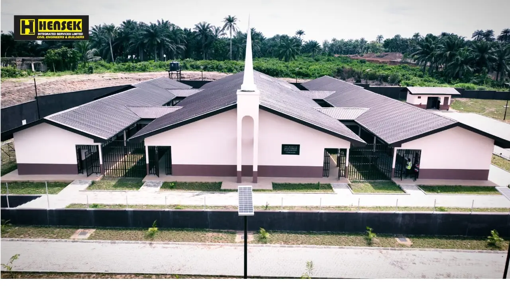
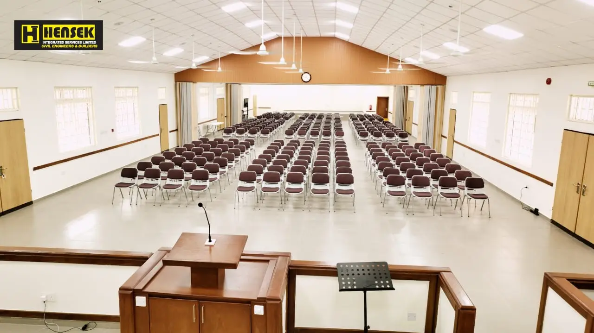
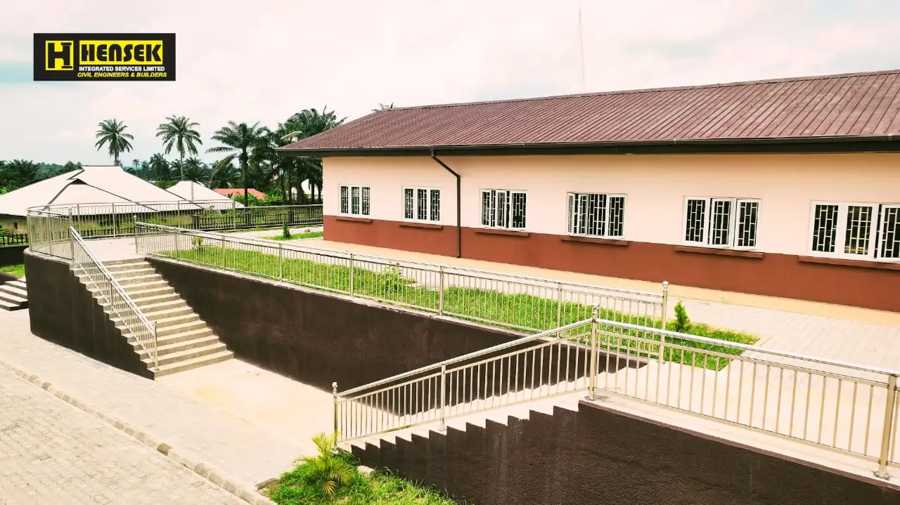
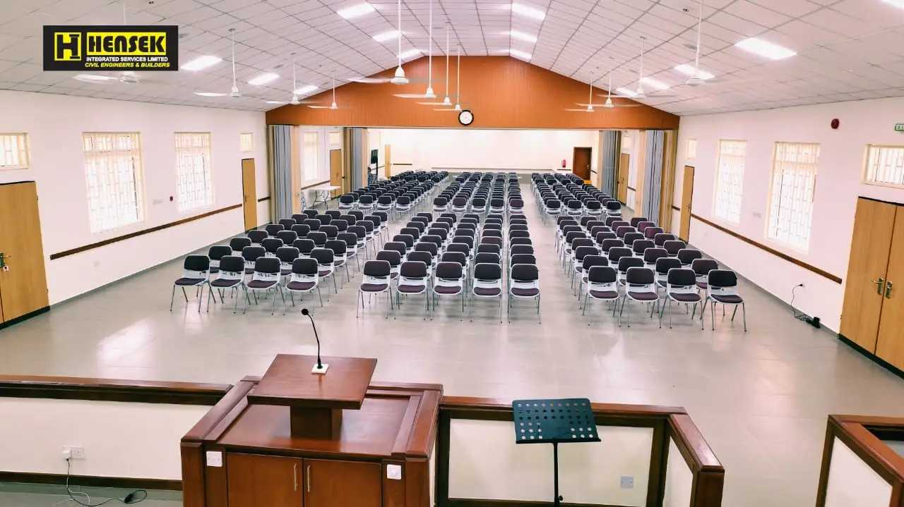
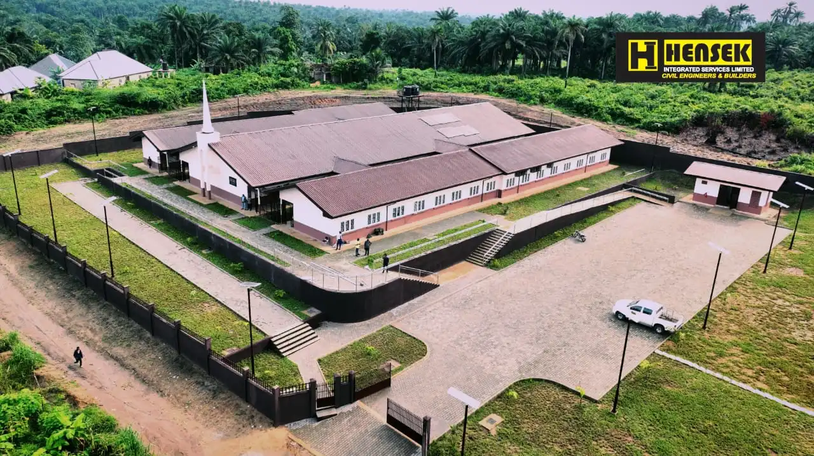
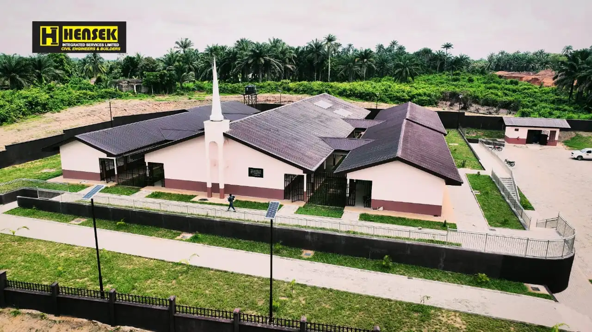
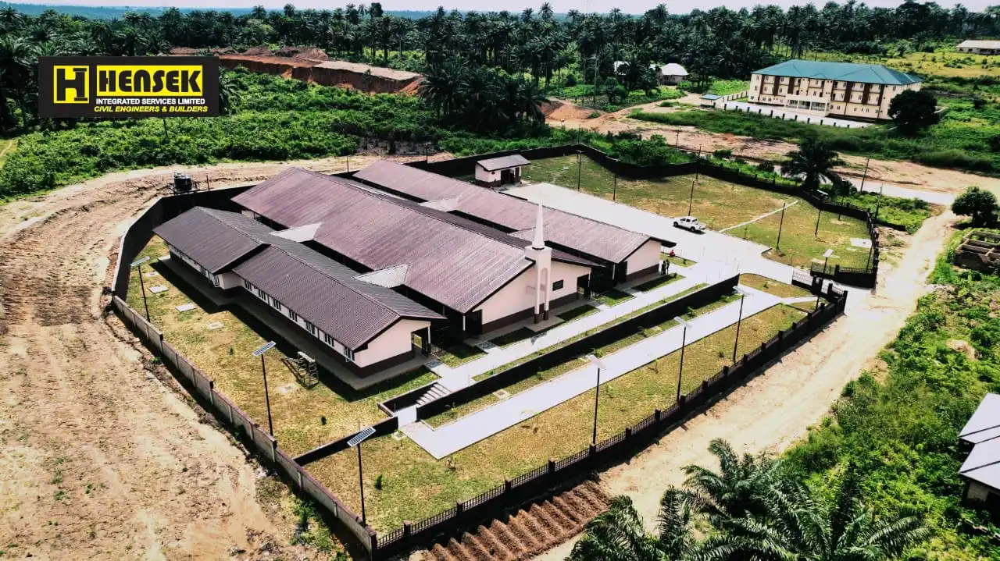

Gallery
Home
Gallery
Contact

Below are photos of the chapel

Sacrament meeting Hall

Building outside view

Sacrament meeting Hall

Building view from above

Building view from above

Building view from above